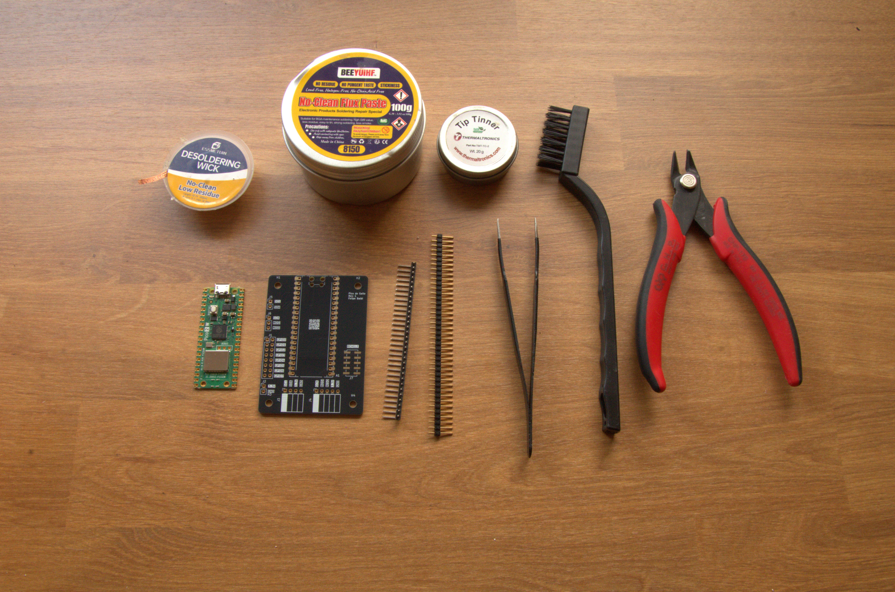
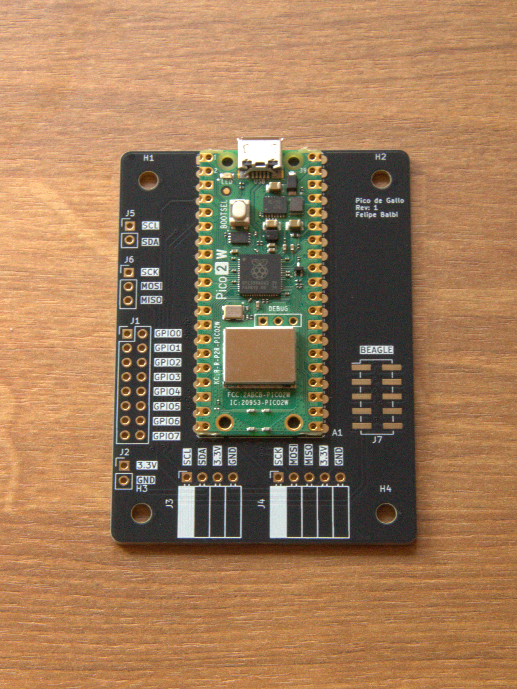
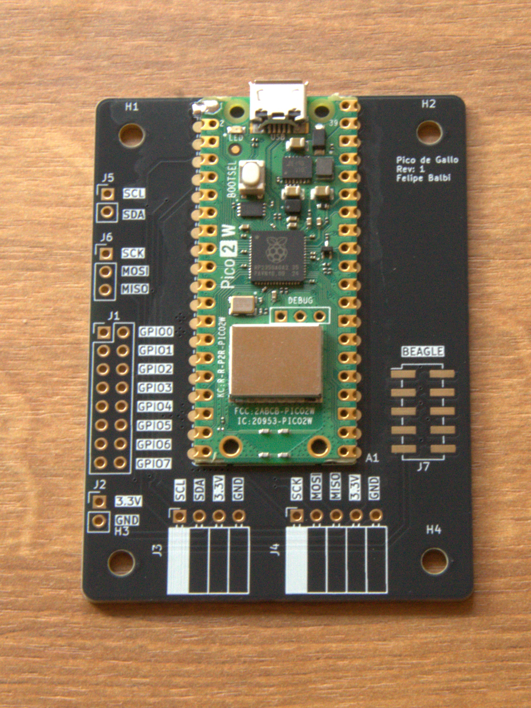
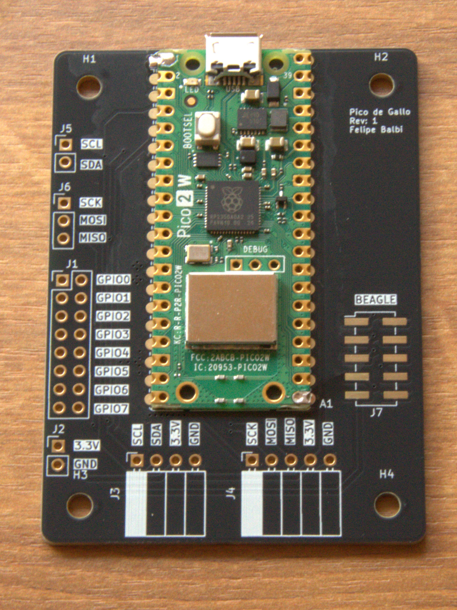
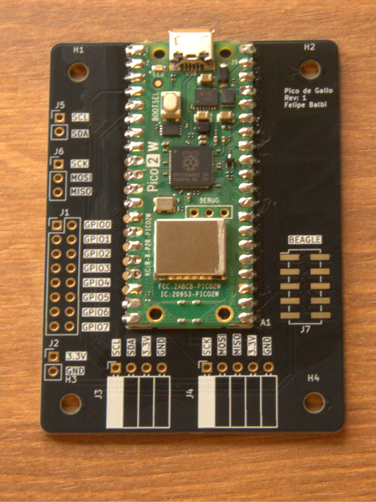
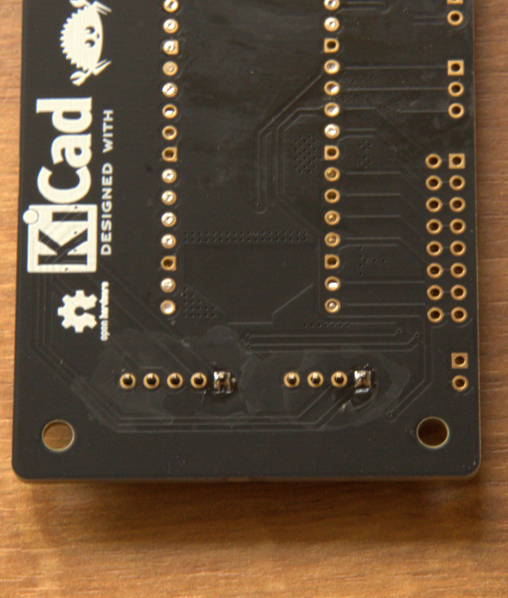
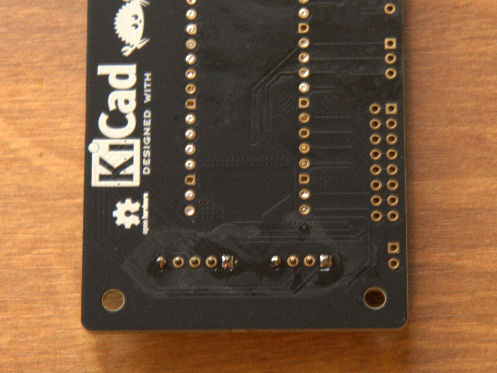
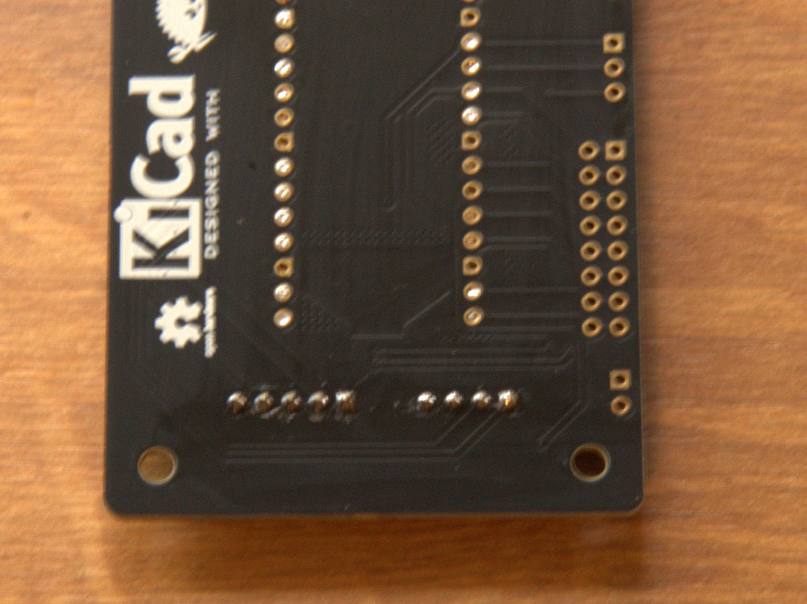
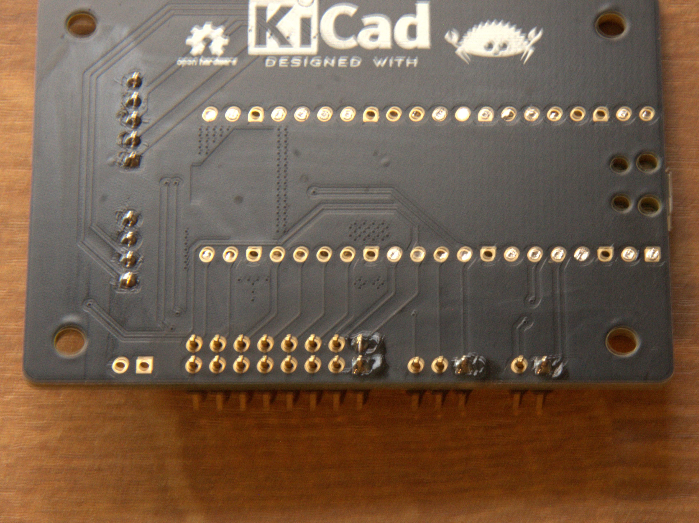
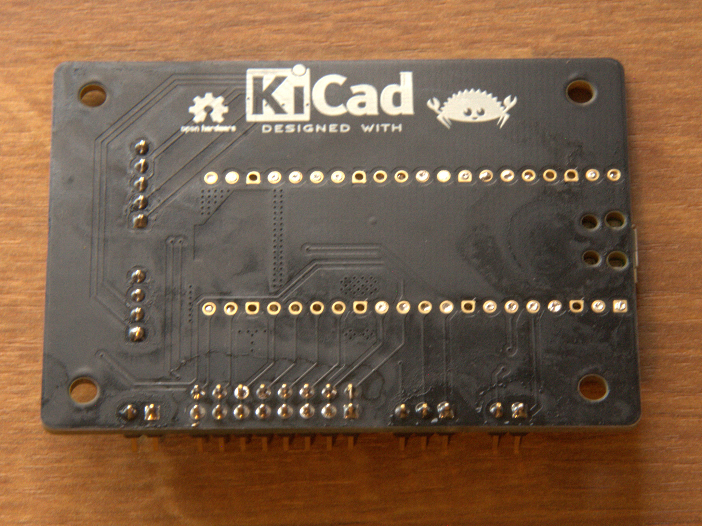

Getting Started
There are just a few steps needed in order to get a functioning Pico de Gallo on your hands:
- Fabricate the landing board
- Solder components
- Flash latest Firmware
We will look at the each in the following sections, but first we need to discuss materials and equipment needed to assemble a Pico de Gallo PCB.
Equipment and materials
- Soldering iron or soldering station
- Solder wire spool
- Soldering iron tip cleaner (either sponge or brass will work)
- Good quality no-clean liquid flux
- Raspberry pi Pico 2 board
- Pico de Gallo landing board
- ESD-safe cleaning brushes
- (Optional) PCB holder or helping hands
- (Optional) Soldering iron tip tinner
PCB Fabrication
There are several suitable PCB fabrication services which can consume our Gerbers and produce high quality PCBs delivered to your door. You are free to choose whichever your want.
DISCLAIMER: we are not responsible for anything related to PCB fabrication. Any costs, mistakes, damages associated with it are your responsibility.
Our gerbers are hosted in the Releases page for our Github repository. For convenience, here’s the link to the latest Gerber release at the time of this writing.
For most of these PCB fabrication services, you can just upload the
gerbers.zip file downloaded from our Hardware release above, select
your desired silk screen color, solder mask color, and surface finish
and place the order. Once the boards are ready, they should be mailed
to your door.
Soldering Components
Tip
Soldering takes practice. Before starting make sure you have all necessary equipment and materials around you and no unnecessary obstructions.
Make sure that the tip of your soldering iron touches both components being soldered together. That is, if you’re soldering the Pico 2 to the landing board, the iron tip should touch both the pico 2 and the landing board’s pad at the same time.
Let the area heat up for a couple seconds before introducing the solder wire.
When soldering, it’s wise to start with the lowest height components first. In the case of Pico de Gallo, that will be the Pico 2 itself.
Here are some of materials and equipment necessary:

Soldering the Pico 2
Place the Pico 2 onto the landing board aligning the edge of the Pico 2 board to the edge of the landing board as shown below:

Start by soldering one and only one corner pad:

This will allow you to reflow — that is, remelt — the solder and move the board around in case it doesn’t exactly align with the other pads.
Tip
Solder flux makes the process of soldering these components a lot easier. Grab some no-clean flux, spread around the pads and the solder will be pulled onto the pads by surface tension.
As it turns out, solder really likes to stick to exposed copper and truly despises solder mask.
Once you align the board correctly — see the example below —, you can move on to the opposite corner. This will help prevent any further movement during the remainder of the soldering process.

At this point you are ready to solder all remaining pads. The landing board and pico 2 should be strongly attached to one another as shown below:

Soldering right angle headers
Next, you should move on to the right angle headers. These a bit tricky to solder, but with some patience and, perhaps, a piece of Polyimide Electrical Tape — also known as Kapton Tape — to hold the headers while you solder, should make the process a little easier.
Similarly to how we soldered the pico 2 to the landing board, here, too, we want to solder one pin only and make sure everything remains aligned before proceeding. Below you can see the process as a sequence of images.



Finally, we can solder all the remaining headers as they are all the same height.
Soldering remaining headers
Once again, solder one pin on each header:

If any of them hardened crooked or not flush with the landing board, fix it before proceeding. Continue by soldering one more pin on the opposite corner of each header. Finish by soldering all remaining pins.

Finishing touches
Now is a good time to visually inspect the board. Make sure there are no bridged pins or pads — that is, no solder shorting any neighboring pins to each other — as that could cause unexpected problems if you were to plug the USB cable.
After verifying that the board looks correct, now is the time to scrub the excess flux residue off the board. This is achieved with ESD safe brushes and 99% Isopropyl Alcohol.
Caution
Isopropyl Alcohol (IPA) is highly flammable. Care should be taken to not inhale IPA fumes. Make sure you are in a well-ventilated area while cleaning the board with IPA.
IPA can also some dryness upon skin contact.
Flashing Firmware
With an assembled Pico de Gallo, the next step is to flash the
latest Firmware. In order to do so, we download the latest
firmware.uf2 from the Releases
page from our Github
repository. At
the time of this writing, that is Firmware
v0.5.0.
It’s very easy to update firmware on Pico de Gallo, simply:
- Insert the USB cable to pico 2’s micro-USB port
- Press and hold the
BOOTSELbutton - Insert the other end of the USB cable to an available USB port on your computer
A new USB drive named RP2350 should show on your computer. Simply
drag and drop the firmware.uf2 file to this new USB drive. Pico de
Gallo will automatically disconnect and reconnect with the new
Firmware.
Verifying Firmware Version
Finally, let’s verify that the firmware running on the device matches
our expectation. Grab the pico-de-gallo-app suitable for your host
Operating System from our
Releases
page. At the time of this writing, the latest version is Application
v0.5.0. We
currently support x86_64 and Aarch64 for both Windows and Linux,
and Aarch64 for macOS.
Once you have the correct binary, run the version command:
$ gallo version
Pico de Gallo FW v0.8.0
Schema v0.4.0
HW revision 1
Capabilities: I2C ✓ | SPI ✓ | UART ✗ | GPIO ✓ | PWM ✓ | ADC ✗ | 1-Wire ✗
Success 🎉. With this completed we can get familiarized with the other
parts of the Pico de Gallo ecosystem and write a driver for the
tmp102 temperature sensor.
Hardware Revisions
The firmware is compiled with a hardware revision feature flag that
controls which peripherals are available. The gallo version output
shows the hardware revision and its supported capabilities.
| Revision | Feature Flag | Capabilities |
|---|---|---|
| v1 (current) | hw-rev1 (default) | I2C, SPI, GPIO, PWM |
| v2 (future) | hw-rev2 | I2C, SPI, UART, GPIO, PWM, ADC, 1-Wire |
The v1 landing board does not route UART (GPIO 0–1), ADC (GPIO 26–29),
or 1-Wire (GPIO 16) pins. Calling an unsupported endpoint on v1
firmware returns an Unsupported error.
Pin Map
The table below shows every function exposed by the firmware and the RP2350 GPIO it maps to. This is the authoritative pin assignment — refer to this when wiring peripherals.
| Function | GPIO | HW Rev | Notes |
|---|---|---|---|
| UART TX | GPIO 0 | v2 | Buffered, interrupt-driven |
| UART RX | GPIO 1 | v2 | |
| I²C SDA | GPIO 2 | v1+ | 7-bit addressing, async DMA |
| I²C SCL | GPIO 3 | v1+ | |
| SPI RX (MISO) | GPIO 4 | v1+ | DMA-backed full-duplex |
| SPI SCK | GPIO 6 | v1+ | |
| SPI TX (MOSI) | GPIO 7 | v1+ | |
| GPIO 0 | GPIO 8 | v1+ | Input/output/edge events |
| GPIO 1 | GPIO 9 | v1+ | Input/output/edge events |
| GPIO 2 | GPIO 10 | v1+ | Input/output/edge events |
| GPIO 3 | GPIO 11 | v1+ | Input/output/edge events |
| PWM 0 | GPIO 12 | v1+ | Slice 6 channel A |
| PWM 1 | GPIO 13 | v1+ | Slice 6 channel B |
| PWM 2 | GPIO 14 | v1+ | Slice 7 channel A |
| PWM 3 | GPIO 15 | v1+ | Slice 7 channel B |
| 1-Wire | GPIO 16 | v2 | PIO0/SM0, open-drain |
| ADC 0 | GPIO 26 | v2 | 12-bit, 0–3.3 V nominal |
| ADC 1 | GPIO 27 | v2 | 12-bit |
| ADC 2 | GPIO 28 | v2 | 12-bit |
| ADC 3 | GPIO 29 | v2 | 12-bit |
Software Prerequisites
To use Pico de Gallo you need the gallo CLI application. Pre-built
binaries for Windows (x86_64, Aarch64), Linux (x86_64, Aarch64), and
macOS (Aarch64) are available on the
Releases page.
If you prefer to build from source:
- Install Rust (stable toolchain)
- Clone the repository:
git clone https://github.com/OpenDevicePartnership/pico-de-gallo - Build the CLI:
cd crates && cargo build --release -p gallo - The binary will be at
target/release/gallo(orgallo.exeon Windows)
USB Driver Notes
- Linux — you may need a udev rule to allow non-root access. Create
/etc/udev/rules.d/99-pico-de-gallo.ruleswith:
Then runSUBSYSTEM=="usb", ATTR{idVendor}=="045e", ATTR{idProduct}=="ffff", MODE="0666"sudo udevadm control --reload-rules && sudo udevadm trigger. - Windows — the device should be recognized automatically. If not, use Zadig to install the WinUSB driver.
- macOS — no additional drivers needed.